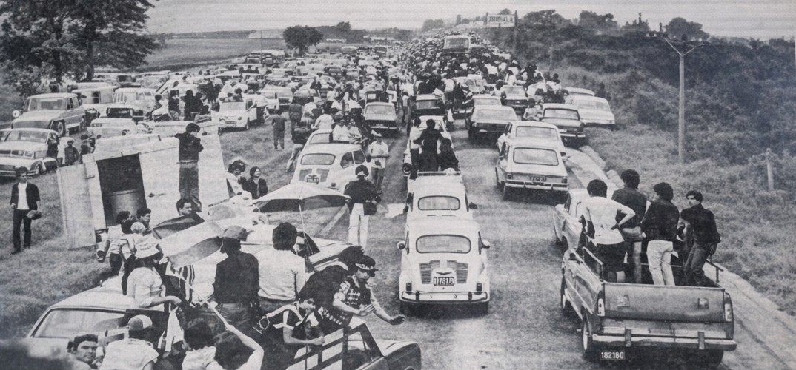

Las Caravanas que Hicieron Historia
Recaudaciones
Los numeros que cuentan la historia de los mas convocantes de Cordoba. Talleres, Belgrano e Instituto: quien convoco mas, quien recaudo mas, la eterna rivalidad en cifras.

Los numeros que cuentan la historia de los mas convocantes de Cordoba. Talleres, Belgrano e Instituto: quien convoco mas, quien recaudo mas, la eterna rivalidad en cifras.